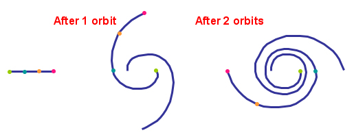

The simplest idea for the origin of spiral arms is that somehow the material in the galaxy condensed into its spiral pattern from the very start, and that pattern has remained fixed since then. Unfortunately, this idea immediately runs into trouble because galaxies exhibit differential rotation. Every object in the disk of the galaxy moves with the same orbital speed, but because objects further from the centre of the galaxy have larger orbits, it will take them longer to complete one revolution than those closer to the centre. The result is that the outer objects lag behind the inner objects causing the spiral to wind up tighter and tighter until ultimately it disappears. This is known as the ‘winding problem’.

Imagine 4 points along a section of spiral arm. If we trace them over a few rotations, the spiral arm they define would wind up tightly – and could not persist as observed.